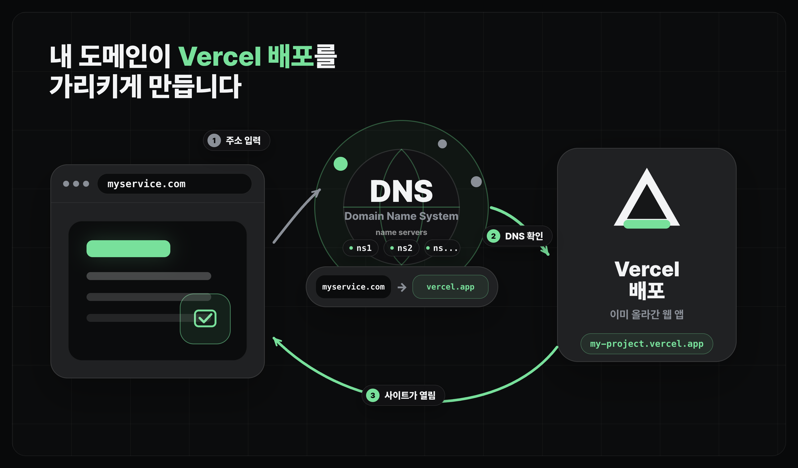

배포하기
나만의 도메인 설정하기
도메인 이름과 DNS 레코드로 호스팅 서비스 연결 상태를 확인합니다
얻어갈 것
- 도메인, 서브도메인, DNS 레코드의 기본 뜻을 잡습니다.
- 호스팅 서비스와 도메인 관리 서비스에서 무엇을 맞춰야 하는지 봅니다.
DNS 구조
DNS(Domain Name System)는 사람이 읽는 도메인 이름을 실제 서비스 위치로 이어 주는 분산 주소록입니다.
- 도메인(domain)은 사람이 읽기 쉬운 주소입니다. 예를 들어
myservice.com같은 이름입니다. - 호스팅 서비스에 배포된 사이트는 기본 URL이 있지만, DNS를 설정하면 내가 산 도메인으로 접속하게 만들 수 있습니다.
- DNS에는 내부적으로 여러 네임서버(nameserver)들이 존재하며, 이 네임서버를 통해서 도메인이 변환됩니다.
- DNS 레코드는 네임서버에 적어 두는 실제 연결값입니다. 예를 들어
myservice.com을 Vercel 쪽 주소로 보내는 설정입니다.

도메인 연결에서 볼 화면
보통은 두 화면만 보면 됩니다.
- 호스팅 서비스: "이 도메인을 내 프로젝트에 붙이겠다"고 추가하고, 필요한 DNS 값을 확인합니다. 이 레슨에서는 Vercel이 예시입니다.
- 도메인 관리 서비스: 내가 산 도메인의 DNS 레코드나 네임서버를 수정합니다. 예: GoDaddy, 가비아, Spaceship.
- 대부분은 도메인을 산 서비스 안에 도메인 관리 화면도 같이 있습니다.
네임서버
네임서버(nameserver)는 특정 도메인의 DNS 레코드를 들고 응답하는 서버입니다. 도메인 관리 화면에서 "네임서버를 바꾼다"는 말은 이 도메인의 레코드를 어느 서비스의 네임서버가 맡을지 바꾸는 뜻입니다.
- 도메인을 처음 사면 보통 구매처의 기본 네임서버가 잡혀 있습니다.
- 이번 실습처럼 Vercel에 DNS까지 맡기려면, 도메인 관리 서비스에서 네임서버를 Vercel이 알려준 값으로 바꿉니다. 예:
ns1.vercel-dns.com,ns2.vercel-dns.com. - 네임서버를 바꾸면 그 뒤부터는 예전 구매처 화면이 아니라 새 도메인 관리 서비스에서
A,CNAME,TXT레코드를 고칩니다.
도메인 이름 읽기
도메인 화면에서는 비슷한 단어가 자주 나오니, 처음에는 아래 정도만 구분하면 됩니다.
| 이름 | 예시 | 의미 |
|---|---|---|
| 루트 도메인 | myservice.com | 내가 산 기본 도메인 |
| 서브도메인 | www.myservice.com | 기본 도메인 앞에 이름을 붙인 주소 |
대부분의 서비스는 myservice.com과 www.myservice.com을 둘 다 연결합니다. 하나만 연결하면 어떤 사람은 접속되고, 어떤 사람은 접속이 안 되는 것처럼 보일 수 있습니다.
레코드 감각
DNS 레코드는 "이 이름으로 들어오면 어디로 보낼지"를 적어 둔 줄입니다. 전부 외울 필요는 없고, 호스팅 서비스가 요구하는 값을 현재 DNS를 관리하는 화면에 그대로 넣는다고 보면 됩니다.
| 레코드 | 자주 쓰는 곳 | 의미 |
|---|---|---|
A | 루트 도메인 | 도메인을 특정 IP 주소로 보냅니다. |
CNAME | www 같은 서브도메인 | 한 도메인 이름을 다른 도메인 이름으로 보냅니다. |
TXT | 소유권 확인 | "이 도메인을 내가 관리한다"는 확인값을 넣을 때 자주 씁니다. |
Vercel에서 할 수 있는 두 가지
Vercel에서 커스텀 도메인을 쓰는 방법은 크게 둘입니다.
| 방법 | 언제 쓰나 | 어디서 관리하나 |
|---|---|---|
| Vercel Domains에서 직접 사기 | 새 도메인을 아직 사지 않았을 때 | Vercel에서 도메인과 DNS를 같이 관리 |
| 외부 도메인 관리 서비스에서 Vercel 네임서버로 변경하기 | 이미 GoDaddy, 가비아, Spaceship 같은 곳에서 도메인을 샀을 때 | 구매처에서는 네임서버만 바꾸고, 이후 DNS 레코드는 Vercel에서 관리 |
자주 나는 사고
www.example.com만 연결하고example.com은 빠뜨리는 경우가 있습니다.- DNS를 수정했는데 반영까지 시간이 걸려 바로 안 되는 것처럼 보일 수 있습니다.
- 예전에 넣어 둔 레코드와 Vercel이 요구하는 레코드가 충돌할 수 있습니다.
- 네임서버를 Vercel로 바꾼 뒤에도 예전 도메인 관리 서비스에서 레코드를 고치면 반영되지 않을 수 있습니다.
마무리
- 도메인 설정은 배포된 사이트에 내가 산 이름을 붙이는 작업입니다.
- 막히면 "Vercel이 요구하는 값"과 "현재 네임서버가 가리키는 도메인 관리 서비스의 값"을 비교하면 됩니다.
- 런칭/운영 편에서는 배포 후 장애 대응, 롤백, 더 복잡한 자동화 흐름을 이어서 다룹니다.